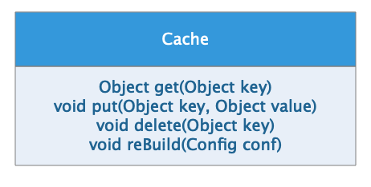
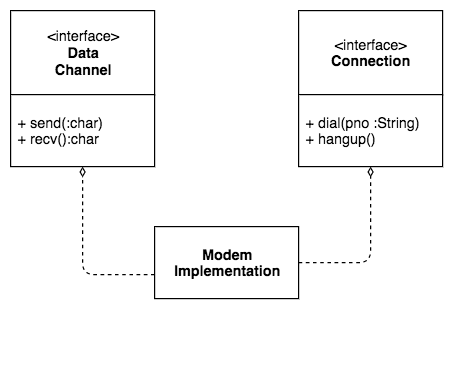
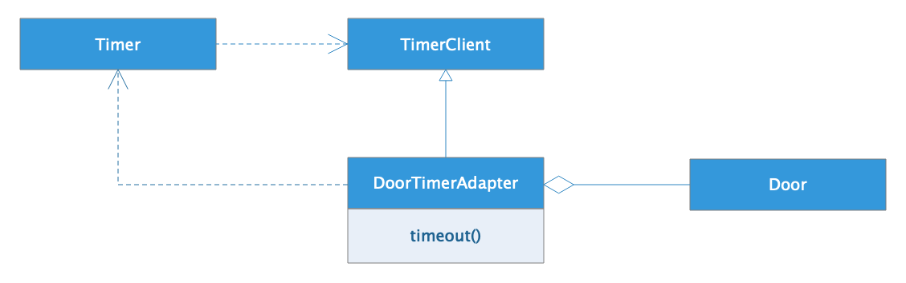
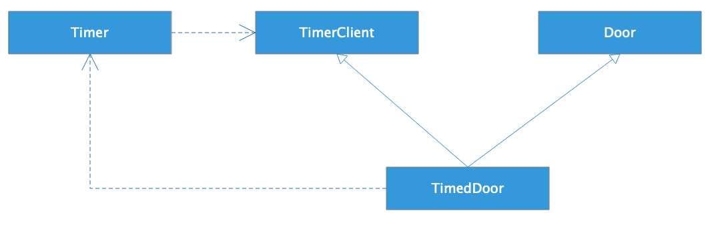
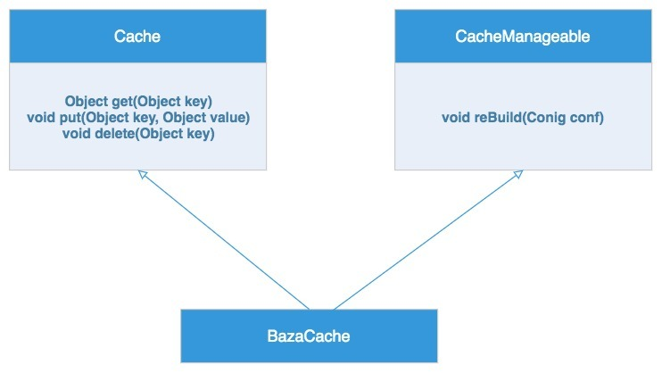

- 00 开篇词 掌握软件开发技术的第一性原理.md
- 01 程序运行原理：程序是如何运行又是如何崩溃的？.md
- 02 数据结构原理：Hash表的时间复杂度为什么是O(1)？.md
- 03 Java虚拟机原理：JVM为什么被称为机器（machine）？.md
- 04 网络编程原理：一个字符的互联网之旅.md
- 05 文件系统原理：如何用1分钟遍历一个100TB的文件？.md
- 06 数据库原理：为什么PrepareStatement性能更好更安全？.md
- 07 答疑 Java Web程序的运行时环境到底是怎样的？.md
- 07 编程语言原理：面向对象编程是编程的终极形态吗？.md
- 08 软件设计的方法论：软件为什么要建模？.md
- 09 软件设计实践：如何使用UML完成一个设计文档？.md
- 10 软件设计的目的：糟糕的程序员比优秀的程序员差在哪里？.md
- 11 软件设计的开闭原则：如何不修改代码却能实现需求变更？.md
- 12 软件设计的依赖倒置原则：如何不依赖代码却可以复用它的功能？.md
- 13 软件设计的里氏替换原则：正方形可以继承长方形吗？.md
- 14 软件设计的单一职责原则：为什么说一个类文件打开最好不要超过一屏？.md
- 15 软件设计的接口隔离原则：如何对类的调用者隐藏类的公有方法？.md
- 16 设计模式基础：不会灵活应用设计模式，你就没有掌握面向对象编程.md
- 17 设计模式应用：编程框架中的设计模式.md
- 18 反应式编程框架设计：如何使程序调用不阻塞等待，立即响应？.md
- 19 组件设计原则：组件的边界在哪里？.md
- 20 答疑 对于设计模式而言，场景到底有多重要？.md
- 20 领域驱动设计：35岁的程序员应该写什么样的代码？.md
- 21 分布式架构：如何应对高并发的用户请求.md
- 22 缓存架构：如何减少不必要的计算？.md
- 23 异步架构：如何避免互相依赖的系统间耦合？.md
- 24 负载均衡架构：如何用10行代码实现一个负载均衡服务？.md
- 25 数据存储架构：如何改善系统的数据存储能力？.md
- 26 搜索引擎架构：如何瞬间完成海量数据检索？.md
- 27 微服务架构：微服务究竟是灵丹还是毒药？.md
- 28 高性能架构：除了代码，你还可以在哪些地方优化性能？.md
- 29 高可用架构：我们为什么感觉不到淘宝应用升级时的停机？.md
- 30 安全性架构：为什么说用户密码泄漏是程序员的锅？.md
- 31 大数据架构：大数据技术架构的思想和原理是什么？.md
- 32 AI与物联网架构：从智能引擎到物联网平台.md
- 33 区块链技术架构：区块链到底能做什么？.md
- 33 答疑 互联网需要解决的技术问题是什么？.md
- 34 技术修炼之道：同样工作十几年，为什么有的人成为大厂架构师，有的人失业？.md
- 35 技术进阶之道：你和这个星球最顶级的程序员差几个等级？.md
- 36 技术落地之道：你真的知道自己要解决的问题是什么吗？.md
- 37 技术沟通之道：如何解决问题？.md
- 38 技术管理之道：你真的要转管理吗？.md
- 38 答疑 工作中的交往和沟通，都有哪些小技巧呢？.md
- 加餐 软件设计文档示例模板.md
- 结束语 期待未来的你，成为优秀的软件架构师.md
15 软件设计的接口隔离原则：如何对类的调用者隐藏类的公有方法？
我在阿里巴巴工作期间，曾经负责开发一个统一缓存服务。这个服务要求能够根据远程配置中心的配置信息，在运行期动态更改缓存的配置，可能是将本地缓存更改为远程缓存，也可能是更改远程缓存服务器集群的IP地址列表，进而改变应用程序使用的缓存服务。
这就要求缓存服务的客户端SDK必须支持运行期配置更新，而配置更新又会直接影响缓存数据的操作，于是就设计出这样一个缓存服务Client类。

这个缓存服务Client类的方法主要包含两个部分：一部分是缓存服务方法，get()、put()、delete()这些，这些方法是面向调用者的；另一部分是配置更新方法reBuild()，这个方法主要是给远程配置中心调用的。
但是问题是，Cache类的调用者如果看到reBuild()方法，并错误地调用了该方法，就可能导致Cache连接被错误重置，导致无法正常使用Cache服务。所以必须要将reBuild()方法向缓存服务的调用者隐藏，而只对远程配置中心的本地代理开放这个方法。
但是reBuild()方法是一个public方法，如何对类的调用者隐藏类的公有方法？
接口隔离原则
我们可以使用接口隔离原则解决这个问题。接口隔离原则说：不应该强迫用户依赖他们不需要的方法。
那么如果强迫用户依赖他们不需要的方法，会导致什么后果呢？
一来，用户可以看到这些他们不需要，也不理解的方法，这样无疑会增加他们使用的难度，如果错误地调用了这些方法，就会产生bug。二来，当这些方法如果因为某种原因需要更改的时候，虽然不需要但是依赖这些方法的用户程序也必须做出更改，这是一种不必要的耦合。
但是如果一个类的几个方法之间本来就是互相关联的，就像我开头举的那个缓存Client SDK的例子，reBuild()方法必须要在Cache类里，这种情况下， 如何做到不强迫用户依赖他们不需要的方法呢？
我们先看一个简单的例子，Modem类定义了4个主要方法，拨号dail()，挂断hangup()，发送send()和接受recv()。这四个方法互相存在关联，需要定义在一个类里。
class Modem {
void dial(String pno);
void hangup();
void send(char c);
void recv();
}
但是对调用者而言，某些方法可能完全不需要，也不应该看到。比如拨号dail()和挂断hangup()，这两个方式是属于专门的网络连接程序的，通过网络连接程序进行拨号上网或者挂断网络。而一般的使用网络的程序，比如网络游戏或者上网浏览器，只需要调用send()和recv()发送和接收数据就可以了。
强迫只需要上网的程序依赖他们不需要的拨号与挂断方法，只会导致不必要的耦合，带来潜在的系统异常。比如在上网浏览器中不小心调用hangup()方法，就会导致整个机器断网，其他程序都不能连接网络。这显然不是系统想要的。
这种问题的解决方法就是通过接口进行方法隔离，Modem类实现两个接口，DataChannel接口和Connection接口。
DataChannel接口对外暴露send()和recv()方法，这个接口只负责网络数据的发送和接收，网络游戏或者网络浏览器只依赖这个接口进行网络数据传输。这些应用程序不需要依赖它们不需要的dail()和hangup()方法，对应用开发者更加友好，也不会导致因错误的调用而引发的程序bug。
而网络管理程序则可以依赖Connection接口，提供显式的UI让用户拨号上网或者挂断网络，进行网络连接管理。

通过使用接口隔离原则，我们可以将一个实现类的不同方法包装在不同的接口中对外暴露。应用程序只需要依赖它们需要的方法，而不会看到不需要的方法。
一个使用接口隔离原则优化的例子
我们再看一个使用接口隔离原则优化设计的例子。假设我们有个门Door对象，这个Door对象可以锁上，可以解锁，还可以判断门是否打开。
class Door {
void lock();
void unlock();
boolean isDoorOpen();
}
现在我们需要一个TimedDoor，一个有定时功能的门，如果门开着的时间超过预定时间，就会自动锁门。
我们已经有一个类Timer，和一个接口TimerClient：
class Timer {
void register(int timeout, TimerClient client);
}
interface TimerClient {
void timeout();
}
TimerClient可以向Timer注册，调用register()方法，设置超时时间。当超时时间到，就会调用TimerClient的timeout()方法。
那么，我们如何利用现有的Timer和TimerClient将Door改造成一个具有超时自动锁门的TimedDoor？
比较容易，且直观的办法就是，修改Door类，Door实现TimerClient接口，这样Door就有了timeout()方法，直接将Door注册给Timer，当超时的时候，Timer调用Door的timeout()方法，在Door的timeout()方法里调用lock()方法，就可以实现超时自动锁门的操作。
class Door implements TimerClient {
void lock();
void unlock();
boolean isDoorOpen();
void timeout(){
lock();
}
}
这个方法简单直接，也能实现需求，但是问题在于使Door多了一个timeout()方法。如果这个Door类想要复用到其他地方，那么所有使用Door的程序都不得不依赖一个它们可能根本用不着的方法。同时，Door的职责也变得复杂，违反了单一职责原则，维护会变得更加困难。这样的设计显然是有问题的。
要想解决这些问题，就应该遵循接口隔离原则。事实上，这里有两个互相独立的接口，一个接口是TimerClient，用来供Timer进行超时控制；一个接口是Door，用来控制门的操作。虽然超时锁门的操作是一个完整的动作，但是我们依然可以使用接口使其隔离。
一种方法是通过委托进行接口隔离，具体方式就是增加一个适配器DoorTimerAdapter，这个适配器继承TimerClient接口实现timeout()方法，并将自己注册给Timer。适配器在自己的timeout()方法中，调用Door的方法实现超时锁门的操作。

这种场合使用的适配器可能会比较重，业务逻辑比较多，如果超时的时候需要执行较多的逻辑操作，那么适配器的timeout()方法就会包含很多业务逻辑，超出了适配器的职责范围。而如果这些逻辑操作还需要使用Door的内部状态，可能还需要迫使Door做出一些修改。
接口隔离更典型的做法是使用多重继承，跟前面Modem的例子一样，TimedDoor同时实现TimerClient接口和继承Door类，在TimedDoor中实现timeout()方法，并注册到Timer定时器中。

这样，使用Door的程序就不需要被迫依赖timeout()方法，Timer也不会看到Door的方法，程序更加整洁，易于复用。
接口隔离原则在迭代器设计模式中的应用
Java的数据结构容器类可以通过for循环直接进行遍历，比如：
List<String> ls = new ArrayList<String>();
ls.add("a");
ls.add("b");
for(String s: ls) {
System.out.println(s);
}
事实上，这种for语法结构并不是标准的Java for语法，标准的for语法在实现上述遍历时应该是这样的：
for(Iterator<String> itr=ls.iterator();itr.hasNext();) {
System.out.println(itr.next());
}
之所以可以写成上面那种简单的形式，就是因为Java提供的语法糖。Java5以后版本对所有实现了Iterable接口的类都可以使用这种简化的for循环进行遍历。而我们上面例子的ArrayList也实现了这个接口。
Iterable接口定义如下，主要就是构造Iterator迭代器。
public interface Iterable<T> {
Iterator<T> iterator();
}
在Java5以前，每种容器的遍历方法都不相同，在Java5以后，可以统一使用这种简化的遍历语法实现对容器的遍历。而实现这一特性，主要就在于Java5通过Iterable接口，将容器的遍历访问从容器的其他操作中隔离出来，使Java可以针对这个接口进行优化，提供更加便利、简洁、统一的语法。
小结
我们再回到开头那个例子，如何让缓存类的使用者看不到缓存重构的方法，以避免不必要的依赖和方法的误用。答案就是使用接口隔离原则，通过多重继承的方式进行接口隔离。
Cache实现类BazaCache（Baza是当时开发的统一缓存服务的产品名）同时实现Cache接口和CacheManageable接口，其中Cache接口提供标准的Cache服务方法，应用程序只需要依赖该接口。而CacheManageable接口则对外暴露reBuild()方法，使远程配置服务可以通过自己的本地代理调用这个方法，在运行期远程调整缓存服务的配置，使系统无需重新部署就可以热更新。
最后的缓存服务SDK核心类设计如下：

当一个类比较大的时候，如果该类的不同调用者被迫依赖类的所有方法，就可能产生不必要的耦合。对这个类的改动也可能会影响到它的不同调用者，引起误用，导致对象被破坏，引发bug。
使用接口隔离原则，就是定义多个接口，不同调用者依赖不同的接口，只看到自己需要的方法。而实现类则实现这些接口，通过多个接口将类内部不同的方法隔离开来。
思考题
在你的开发实践中，你看到过哪些地方使用了接口隔离原则？你自己开发的代码，哪些地方可以用接口隔离原则优化？
欢迎你在评论区写下你的思考，也欢迎把这篇文章分享给你的朋友或者同事，一起交流一下。
© 2019 - 2023 Liangliang Lee. Powered by gin and hexo-theme-book.